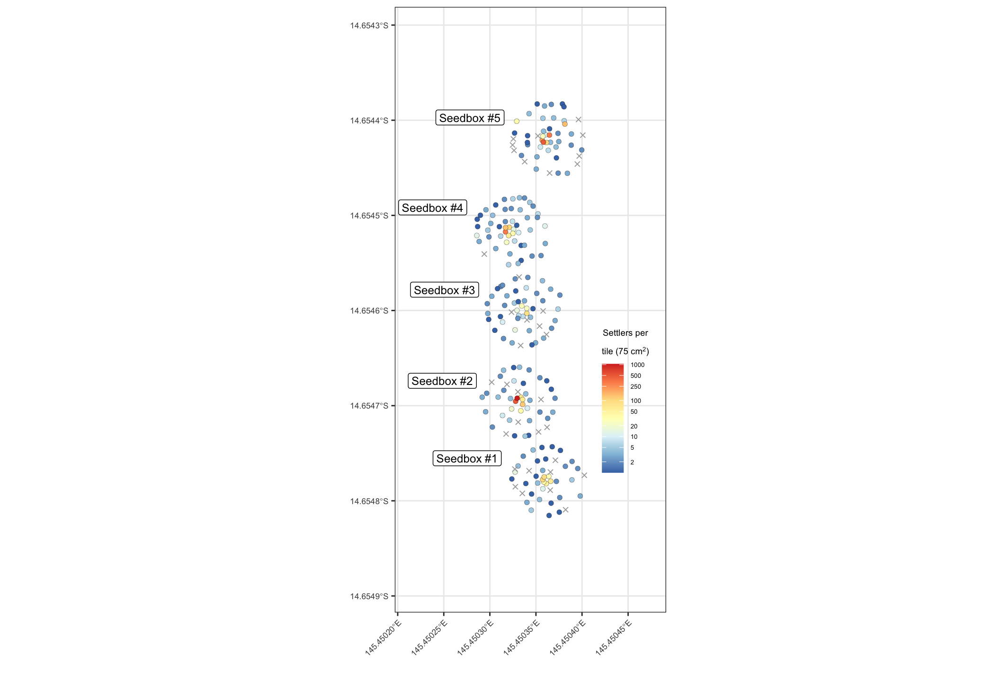
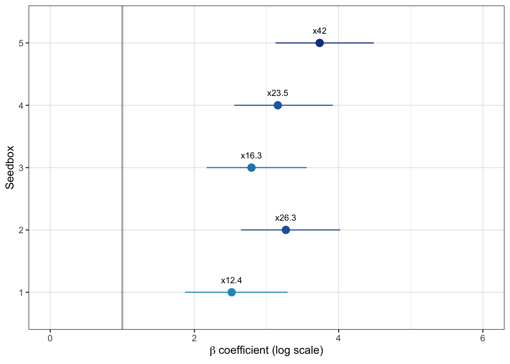

Figure 3
Figure 3a
Spatial map of tiles within seedboxes coloured by settler density (where ‘x’ indicates zero settlement
Code
# load libraries
library(sf)
library(tidyverse)
library(janitor)
library(readxl)
library(leaflet)
library(brms)
# read tile data
tiles <- readxl::read_xlsx("/Users/rof011/seedbox2/tiles.xlsx") |>
group_by(id) |>
summarise(plot=mean(plot), settlers=sum(count))
# import slrp controls
tiles_slrp <- readxl::read_xlsx("/Users/rof011/seedbox2/data_SetTilesSlowReleaseExp3.xlsx") |>
clean_names() |>
rename(id=tile_number) |>
group_by(id) |>
summarise(settlers=sum(settler_count)) |>
mutate(seedbox=0) |> #, dsm=NA, height=NA) |>
drop_na(id)
# vectorise inner tiles adjacent to seedboxes
inner <- c(1217, 1268, 1253, 1121, 1207, 1240, 1021, 1291, 1217,
1084, 1039, 1040, 1213, 1254, 1029,
1099, 1034, 1284, 1027, 1252, 1056,
1073, 1086, 1002, 1005, 1179, 1047,
1187, 1104, 1149, 1130, 1197, 1127,
1194, 1193, 1107, 1191, 1175, 1178)
# read spatial data
seedbox <- rbind(
# st_read("/Users/rof011/seedbox2/shp/Seedbox1.geojson", quiet=TRUE) |> mutate(seedbox=1) |> st_transform(32755),
st_read("/Users/rof011/seedbox2/shp/Seedbox2.geojson", quiet=TRUE) |> mutate(seedbox=2) |> st_transform(32755),
st_read("/Users/rof011/seedbox2/shp/Seedbox3.geojson", quiet=TRUE) |> mutate(seedbox=3) |> st_transform(32755),
st_read("/Users/rof011/seedbox2/shp/Seedbox4.geojson", quiet=TRUE) |> mutate(seedbox=4) |> st_transform(32755),
st_read("/Users/rof011/seedbox2/shp/Seedbox5.geojson", quiet=TRUE) |> mutate(seedbox=5) |> st_transform(32755),
st_read("/Users/rof011/seedbox2/shp/Seedbox6.geojson", quiet=TRUE) |> mutate(seedbox=6) |> st_transform(32755)) |>
st_transform(4326) |>
left_join(tiles |> select(-plot), by="id") |> drop_na(settlers) |>
# add "signal" binary where count exceeds 80% CI of controls
mutate(signal = ifelse(settlers < t.test(tiles_slrp$settlers, conf.level = 0.80)$conf.int[[2]], "none", "signal")) |>
filter(!seedbox == 1) |>
mutate(seedbox = seedbox - 1)
# get centroids of tiles
seedbox_centroids <- seedbox %>%
group_by(seedbox) %>%
summarize(geometry = st_centroid(st_union(geometry))) %>%
bind_cols(st_coordinates(.))
# set legend scale
breaks_vals <- c(2, 5, 10, 20, 50, 100, 250, 500, 1000)
ggplot() + theme_bw() +
geom_sf(data=seedbox |> st_transform(4326) |> dplyr::filter(signal=="signal"),
aes(fill = log(settlers)), shape = 21, stroke=0.1, size = 1.8, show.legend = TRUE) +
geom_sf(data=seedbox |> st_transform(4326) |> dplyr::filter(signal=="none"),
shape = 4, fill="white", color="darkgrey", size = 1.6, show.legend = TRUE) +
geom_label(data = seedbox_centroids |> as.data.frame(),
aes(X, Y, label = paste0("Seedbox #", seedbox)), size=3.2, nudge_x=-0.000084, nudge_y = 0.000022) +
geom_sf(data = seedbox |>
st_transform(4326) |>
st_buffer(8), fill = NA, color = NA, linewidth = 0.5) +
scale_fill_distiller(
name = bquote(atop("Settlers per", "tile (75 cm"^2*")")),
palette = "RdYlBu",
direction = -1,
na.value = "transparent",
breaks = log(breaks_vals),
labels = breaks_vals
) +
theme(
axis.text.x = element_text(angle = 45, vjust = 1, hjust = 1, size = 6.5),
axis.text.y = element_text(size = 6.5),
legend.position = c(0.85, 0.35),
legend.title = element_text(size=7),
legend.text = element_text(size=5),
legend.background = element_blank(),
legend.box.background = element_blank(),
legend.key = element_blank(),
legend.direction = "vertical") +
xlab("") +
ylab("")
Figure 3b
maximum settlement density within each seedbox for all tiles (including tiles immediately adjacent to the seedbox) and for outer tiles (>50 cm from each seedbox)
Code
### generate summary data
summary_data <- seedbox |>
as.data.frame() |>
select(-geometry, -signal) |>
rbind(tiles_slrp) |>
mutate(seedbox=as.factor(seedbox)) |>
group_by(seedbox) |>
summarise(
settlers_mean = mean(settlers, na.rm = TRUE),
settlers_max = max(settlers, na.rm = TRUE),
settlers_se = sd(settlers, na.rm = TRUE) / sqrt(n()), # Standard error
.groups = "drop"
) |>
mutate(
lower_ci = settlers_mean - qt(0.80, df = n() - 1) * settlers_se, # Lower bound
upper_ci = settlers_mean + qt(0.80, df = n() - 1) * settlers_se # Upper bound
)
# filter to only outer tiles
seedbox_outer <- seedbox |> filter(!id %in% inner)
# Calculate mean and 95% CI for settlers grouped by seedbox
summary_data_outer <- seedbox_outer |>
as.data.frame() |>
select(-geometry, -signal) |>
rbind(tiles_slrp) |>
mutate(seedbox=as.factor(seedbox)) |>
group_by(seedbox) |>
summarise(
settlers_mean = mean(settlers, na.rm = TRUE),
settlers_max = max(settlers, na.rm = TRUE),
settlers_se = sd(settlers, na.rm = TRUE) / sqrt(n()), # Standard error
.groups = "drop"
) |>
mutate(
lower_ci = settlers_mean - qt(0.80, df = n() - 1) * settlers_se, # Lower bound
upper_ci = settlers_mean + qt(0.80, df = n() - 1) * settlers_se # Upper bound
)
summary_data$group <- "inner"
summary_data_outer$group <- "outer"
combined_data <- bind_rows(summary_data, summary_data_outer) |>
mutate(seedbox = factor(seedbox, levels = 0:5, labels = c("reference", paste0("seedbox ", 1:5))))
ggplot(combined_data, aes(x = seedbox, y = settlers_max, fill = group)) +
geom_bar(stat = "identity", position = "stack", color = "black", width = 0.6, linewidth=0.3) +
scale_fill_manual(
values = c("inner" = "turquoise4", "outer" = "turquoise3"),
labels = c("inner" = "Adjacent tiles", "outer" = "outer tiles"),
name = NULL
) +
labs(x="", y = expression("Maximum settlers per tile (75 cm"^2*")"), " (75cm2)") +
geom_vline(xintercept = 1, linewidth = 14, alpha=0.06) +
ylim(0, 1200) +
theme_bw() +
theme(
axis.text.x = element_blank(), #(angle = 45, vjust = 0.9, hjust = 1),
axis.title.y = element_text(size=8),
legend.position = c(0.30, 0.92),
legend.background = element_blank(),
legend.box.background = element_blank(),
legend.key = element_blank(),
legend.text = element_text(size = 6),
legend.key.size = unit(0.6, "lines"),
plot.margin = margin(5, 5, 0, 5)
)Figure 2c
mean settlement density per tile for the reference site and five seedboxes (horizontal line = mean settlement across all seedboxes, 3.65 larvae tile-1)
Code
summary_data_plot <- seedbox_outer |>
as.data.frame() |>
select(-geometry, -signal) |>
rbind(tiles_slrp) |>
mutate(seedbox=as.factor(seedbox)) |>
group_by(seedbox) |>
summarise(
settlers_mean = mean(settlers, na.rm = TRUE),
settlers_max = max(settlers, na.rm = TRUE),
settlers_se = sd(settlers, na.rm = TRUE) / sqrt(n()), # Standard error
.groups = "drop"
) |>
mutate(
lower_ci = settlers_mean - qt(0.80, df = n() - 1) * settlers_se, # Lower bound
upper_ci = settlers_mean + qt(0.80, df = n() - 1) * settlers_se # Upper bound
) |>
mutate(seedbox = factor(seedbox, levels = 0:6, labels = c("Reference", paste0("Seedbox ", 1:6))))
ggplot() + theme_bw() +
geom_bar(data = summary_data_plot, aes(x = seedbox, y = settlers_mean, fill = settlers_mean),
linewidth = 0.3, show.legend = FALSE, stat = "identity", color = "black", width = 0.7, alpha=0.9) +
geom_hline(yintercept = mean(seedbox_outer$settlers), alpha = 0.3) +
geom_errorbar(data = summary_data_plot, aes(x = seedbox, y = settlers_mean,
ymin = settlers_mean - settlers_se,
ymax = settlers_mean + settlers_se), width = 0.2) +
scale_fill_distiller(palette = "YlGnBu", direction = 1) +
geom_vline(xintercept = 1, linewidth = 14, alpha = 0.06) +
labs(
x = "",
y = expression("Mean density per outer tile (75 cm"^2*")")
) +
theme(
axis.text.x = element_text(angle = 0, vjust = 0.9, hjust = 0.5, size = 4.5),
axis.title.y = element_text(size = 8),
plot.margin = margin(t = 0, r = 5, b = 5, l = 5)
)Figure 2d
Bayesian posterior median estimates (with 95% credible intervals) from the zero-inflated Poisson model of settlement within seedbox tiles relative to the baseline “natural settlement” at the reference site (with exp(β) or x-fold differences above).
Code
library(brms)
library(tidybayes)
conflicted::conflicts_prefer(brms::dstudent_t)
conflicted::conflicts_prefer(brms::pstudent_t)
conflicted::conflicts_prefer(brms::qstudent_t)
conflicted::conflicts_prefer(brms::rstudent_t)
seedbox_outer_brms <- seedbox_outer |> as.data.frame() |>
select(-geometry, -signal) |>
rbind(tiles_slrp) |>
mutate(seedbox=as.factor(seedbox)) |>
mutate(type = ifelse(seedbox=="0", "ctrl", "seed"))
zi_model_outer <- brm(
settlers ~ seedbox,
family = zero_inflated_poisson(),
data = seedbox_outer_brms,
chains = 4,
cores = 4,
iter = 2000,
silent=2,
refresh = 0
)Running /Library/Frameworks/R.framework/Resources/bin/R CMD SHLIB foo.c
using C compiler: ‘Apple clang version 17.0.0 (clang-1700.0.13.3)’
using SDK: ‘MacOSX15.4.sdk’
clang -isysroot /Library/Developer/CommandLineTools/SDKs/MacOSX.sdk -I"/Library/Frameworks/R.framework/Resources/include" -DNDEBUG -I"/Library/Frameworks/R.framework/Versions/4.4-arm64/Resources/library/Rcpp/include/" -I"/Library/Frameworks/R.framework/Versions/4.4-arm64/Resources/library/RcppEigen/include/" -I"/Library/Frameworks/R.framework/Versions/4.4-arm64/Resources/library/RcppEigen/include/unsupported" -I"/Library/Frameworks/R.framework/Versions/4.4-arm64/Resources/library/BH/include" -I"/Library/Frameworks/R.framework/Versions/4.4-arm64/Resources/library/StanHeaders/include/src/" -I"/Library/Frameworks/R.framework/Versions/4.4-arm64/Resources/library/StanHeaders/include/" -I"/Library/Frameworks/R.framework/Versions/4.4-arm64/Resources/library/RcppParallel/include/" -I"/Library/Frameworks/R.framework/Versions/4.4-arm64/Resources/library/rstan/include" -DEIGEN_NO_DEBUG -DBOOST_DISABLE_ASSERTS -DBOOST_PENDING_INTEGER_LOG2_HPP -DSTAN_THREADS -DUSE_STANC3 -DSTRICT_R_HEADERS -DBOOST_PHOENIX_NO_VARIADIC_EXPRESSION -D_HAS_AUTO_PTR_ETC=0 -include '/Library/Frameworks/R.framework/Versions/4.4-arm64/Resources/library/StanHeaders/include/stan/math/prim/fun/Eigen.hpp' -D_REENTRANT -DRCPP_PARALLEL_USE_TBB=1 -I/opt/R/arm64/include -fPIC -O3 -mtune=native -march=native -c foo.c -o foo.o
In file included from <built-in>:1:
In file included from /Library/Frameworks/R.framework/Versions/4.4-arm64/Resources/library/StanHeaders/include/stan/math/prim/fun/Eigen.hpp:22:
In file included from /Library/Frameworks/R.framework/Versions/4.4-arm64/Resources/library/RcppEigen/include/Eigen/Dense:1:
In file included from /Library/Frameworks/R.framework/Versions/4.4-arm64/Resources/library/RcppEigen/include/Eigen/Core:19:
/Library/Frameworks/R.framework/Versions/4.4-arm64/Resources/library/RcppEigen/include/Eigen/src/Core/util/Macros.h:679:10: fatal error: 'cmath' file not found
679 | #include <cmath>
| ^~~~~~~
1 error generated.
make: *** [foo.o] Error 1Code
# # Extract posterior draws for coefficients
summary_draws_outer<- zi_model_outer %>%
tidybayes::spread_draws(b_seedbox1, b_seedbox2, b_seedbox3, b_seedbox4, b_seedbox5) |>
pivot_longer(cols = starts_with("b_seedbox"),
names_to = "seedbox",
values_to = "estimate") %>%
mutate(seedbox = gsub("b_seedbox", "", seedbox)) %>% # Remove "b_" prefix
group_by(seedbox) %>%
median_qi(estimate)Plot:
Code
#zi_model_outer_nogroup %>% variables()
ggplot(summary_draws_outer, aes(x = seedbox, fill=estimate, color=estimate, y = (estimate), ymin = (.lower), ymax = (.upper))) +
geom_pointrange(size=0.8, shape=21, stroke=0.5, show.legend=FALSE) +
geom_text(aes(label=paste0("x",round(exp(estimate),1))), size=3, color="black", nudge_x = 0.2) +
scale_color_distiller(
palette = "YlGnBu",
direction = 1,
limits = c(0, 4), # set desired range
oob = scales::squish # squish out-of-bounds to nearest limit
) +
scale_fill_distiller(
palette = "YlGnBu",
direction = 1,
limits = c(0, 4), # set desired range
oob = scales::squish # squish out-of-bounds to nearest limit
) +
coord_flip() +
geom_hline(yintercept=1, linewidth=1, alpha=0.3) +
ylim(0,6) +
labs(x = "Seedbox",
y = expression(beta~"coefficient (log scale)")) +
theme_bw() # + 
Code
# theme(
# axis.text.x = element_text(size = 6.5),
# axis.text.y = element_text(size=6.5),
# axis.title = element_text(size=6.5),
# axis.title.y = element_text(margin = margin(r = 5)) # reduce right margin of y-axis title
# )Table S1
Posterior means from Bayesian zero-inflated Poisson model
Code
diagnostics <- zi_model_outer |>
as_draws_df() |>
tidybayes::summarise_draws() |>
filter(str_detect(variable, "^b_")) |>
mutate(
Parameter = str_remove(variable, "^b_"),
Estimate = round(mean, 2),
Error = round(sd, 2),
`Lower CI (95%)` = round(q5, 2),
`Upper CI (95%)` = round(q95, 2),
Rhat = round(rhat, 2),
`Bulk ESS` = round(ess_bulk),
`Tail ESS` = round(ess_tail)
) |>
select(Parameter, Estimate, Error, `Lower CI (95%)`, `Upper CI (95%)`, Rhat, `Bulk ESS`, `Tail ESS`)
DT::datatable(diagnostics, rownames = FALSE, options = list(
pageLength = 10,
dom = 't',
ordering = FALSE
))